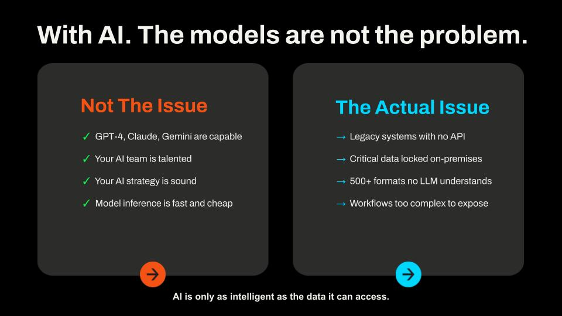
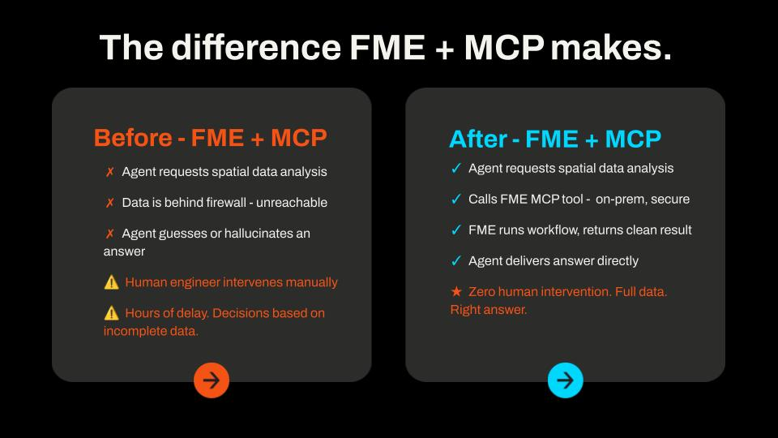
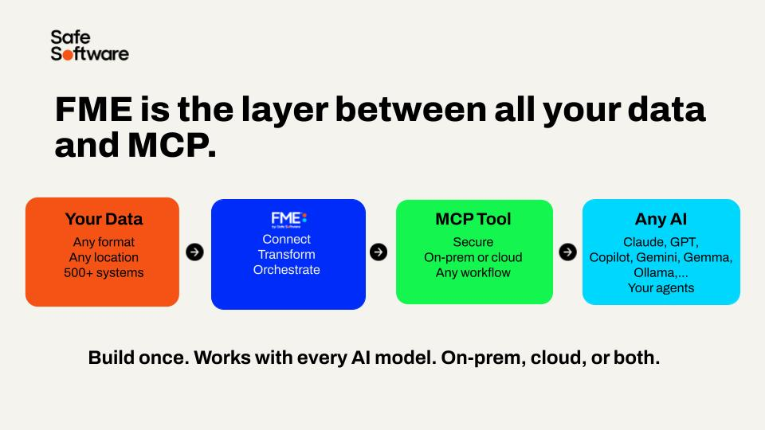
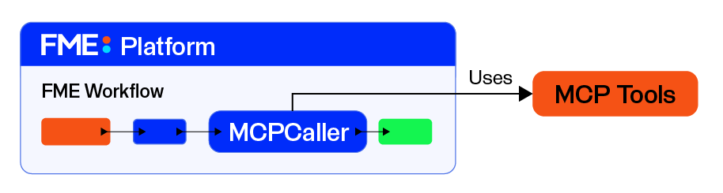
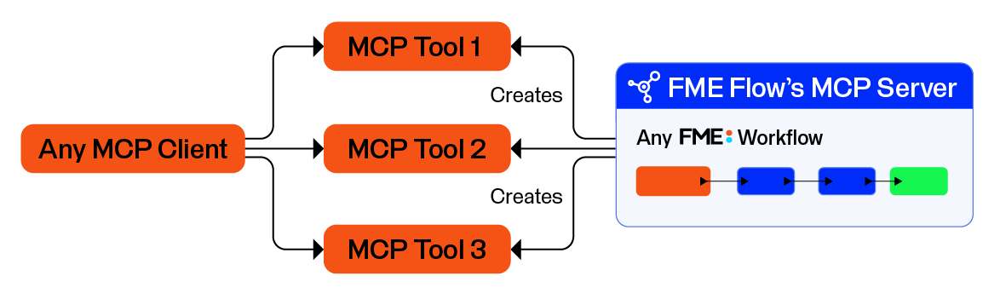

After completing this lesson, you'll be able to:
In this lesson, you will:
MCP, or Model Context Protocol, is an open standard that gives applications a common way to discover and use tools from other systems. Instead of building a custom integration for every tool or service, MCP gives those systems a shared way to describe what they can do and how to call them.
MCP is built around a simple client-server model. An MCP server is any system that exposes tools, advertises what it can do, and waits for a client to call it. An MCP client is anything that connects to those servers, discovers the available tools, and decides which ones to use to complete a task. In most cases, the client is an AI agent or AI-powered application.
Tools are the core of what MCP servers provide. Each tool represents a specific operation a client can invoke, such as retrieving data, running a calculation, or triggering a workflow. Tools have a name, a description of what they do, and a defined set of input parameters. This makes them self-describing, as a client can read a tool's definition and know exactly how to use it without any additional documentation.
When a client connects to a server, it discovers the available tools along with their descriptions and the parameters each one accepts. The client, usually an AI model, then decides which tool to call, with what inputs, and receives a result back. This separation is what makes MCP powerful: servers don't need to know anything about the client, and clients don't need to know anything about how a tool works internally, just what it does and how to call it.
In FME, MCP works in both directions. FME can act as a client using the MCPCaller transformer to call tools from external MCP servers, and FME Flow can act as a server by exposing workspaces as tools that any MCP-compatible client can discover and run.
AI models are very capable; the barrier to AI data integration and analysis isn't the model and its capabilities; it's actually data access. Critical data sits behind firewalls, hides in formats AI can't read, or gets buried in systems lacking an API. When an AI agent cannot reach the data it needs, it either fails or guesses. MCP is the standard that closes that gap, giving AI a consistent, secure way to call tools and retrieve data from the systems that hold it.

Without FME, an AI agent requesting spatial or enterprise data often hits a wall:
With FME Flow acting as an MCP server, the same request looks different. The agent calls an FME MCP tool, FME runs the workspace against your actual systems, and returns a clean, structured result, without the AI ever accessing the data directly. FME Flow logs every call, scopes it to what you've exposed, and runs on infrastructure you control.

FME brings support for 500+ formats, spatial processing, and the ability to build reliable, auditable data pipelines across any system to the MCP party. You build the MCP tool once, and it works with an MCP-compatible client. And MCP tools in FME are just workspaces, so your existing FME skills translate directly.

If you've used FME's HTTPCaller to connect to API endpoints, you're already familiar with direct API integration. Understanding how MCP differs and when you want to use MCP instead helps you choose the right tool for the job. You may already have built FME workspaces to access your data and systems where you connect to API endpoints to send and receive data - you can expose these workspaces as MCP tools.
| API | MCP | A2A (Agent-to-agent) | |
| What it is | A custom request to a specific service endpoint - in FME, you typically do this using an HTTPCaller or OpenAPICaller | An open standard for describing, discovering, and calling tools across any client and server - FME works on both sides as a client via the MCPCaller and as a server via FME Flow | A protocol for AI agents to coordinate and delegate tasks to other agents |
| Vendor flexibility | None - that service's API ties you to it; each new service needs its own integration. | Any MCP client works with any MCP server - FME tools you build once are accessible to any MCP-compatible client without rebuilding | Open standard, but adoption is still growing compared to MCP |
| Token overhead | None to high - zero when the developer hardcodes the integration, but high when an AI is driving the call directly, as it needs to load the full API spec into context; unstructured and inconsistent compared to MCP's compact tool schemas | Medium - AI accesses tool information at runtime, using tokens for each request; FME reduces overall token usage by bundling complex data processing into single tool calls | High - each agent in the chain runs its own inference; costs multiply with chain depth |
| Reliability | High - you can control the request exactly | High - when you describe tools well; FME workspaces are deterministic and return consistent, structured outputs, reducing the chance of ambiguous results or retries | Variable - open-ended agent communication has more failure modes and potential for misinterpretation |
You may also come across Agent-to-Agent (A2A) protocols in conversations about AI. These address a different problem: how agents coordinate and delegate work to one another, rather than accessing tools. A2A and MCP are complementary, as MCP provides the standard protocol for agents to interact with and process your data.
When FME acts as an MCP client, it uses the MCPCaller transformer to connect to external MCP servers from within a workspace. The MCPCaller can discover the tools a server exposes and call them directly, returning the results to the workspace—where you can process, transform, or write the data like any other FME data.

This means FME workspaces can integrate with the broader MCP ecosystem (including documentation systems, databases, APIs, and business applications) without building custom connectors for each. FME can call any system that exposes an MCP server in the same consistent way.
FME Flow can act as an MCP server by exposing FME workspaces as callable tools. When you register a workspace as an MCP tool, any MCP-compatible client (an AI agent, LM Studio, Claude, or another application) can discover it and run it by sending the required inputs. The user parameters in the workspace become the tool's inputs, specifying what the client must provide when calling the tool. FME Flow handles execution, keeping AI away from direct access to your databases and systems.

This is what makes FME workflows available to AI-driven systems. Instead of manually running a workspace in FME Flow, an AI agent can find the tool, understand what it does from its description, decide when to use it, and call it as part of a larger task — all through the MCP standard.
Frank is a GIS administrator for the City of Vancouver; he also administers the city's FME Flow. Frank frequently encounters requests for city data workflows to support routine operations from many departments. Frank frequently receives requests for workflows to support the city's utilities operations, ranging from supplying critical data to processing public requests for action. To more easily support these workflows and requests, while keeping important and confidential city data safe and secure, Frank is working to deploy an MCP server using FME. Frank's MCP server will support new and existing utility data workflows and extend the city's workflows to an easily accessible chat window.
Throughout this course, you will build a City of Vancouver utility data MCP server on FME Flow. The server will expose city data as callable tools that report cell signal quality in each neighborhood, public trees near addresses, and submit infrastructure maintenance requests. You will use an AI model in LM Studio to query the server for this information and run the workflows without accessing the underlying data directly. Before you begin on FME Flow, you will also use the MCPCaller transformer to connect FME to an external weather MCP server, eventually combining live weather data with the city utility data.
Before you start the exercises, answer the following questions based on what you've learned about MCP and FME in this lesson.